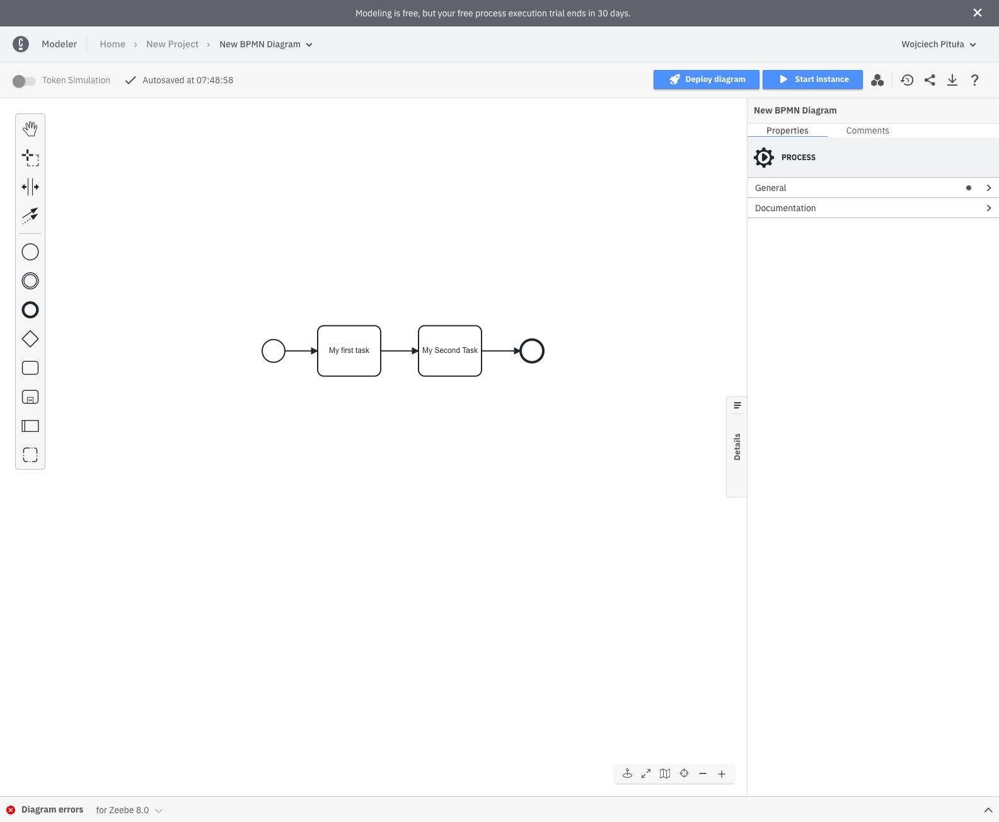
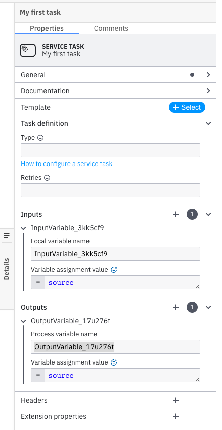
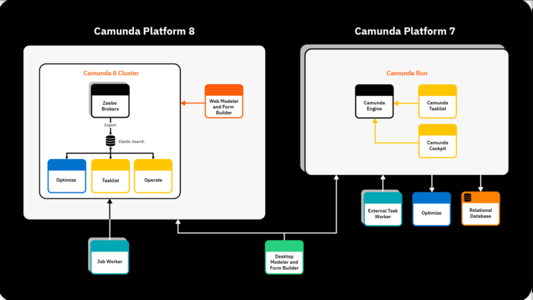
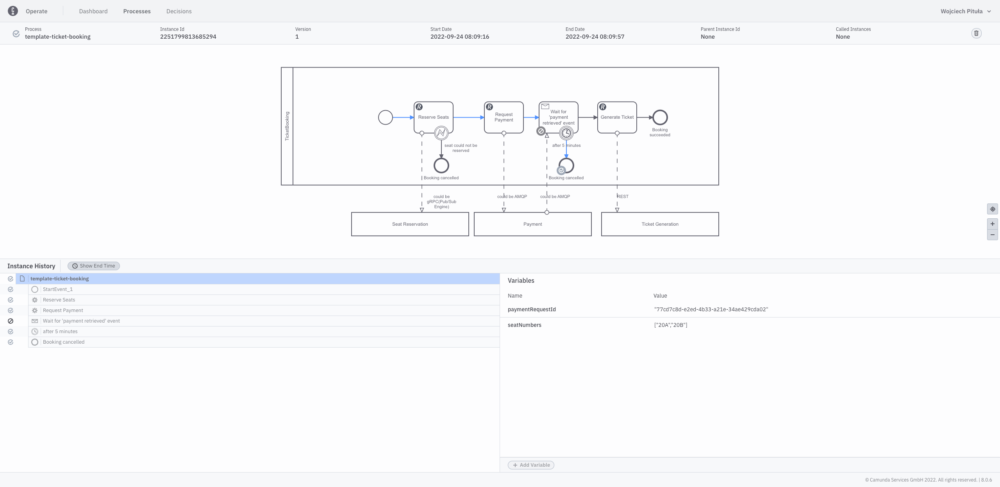
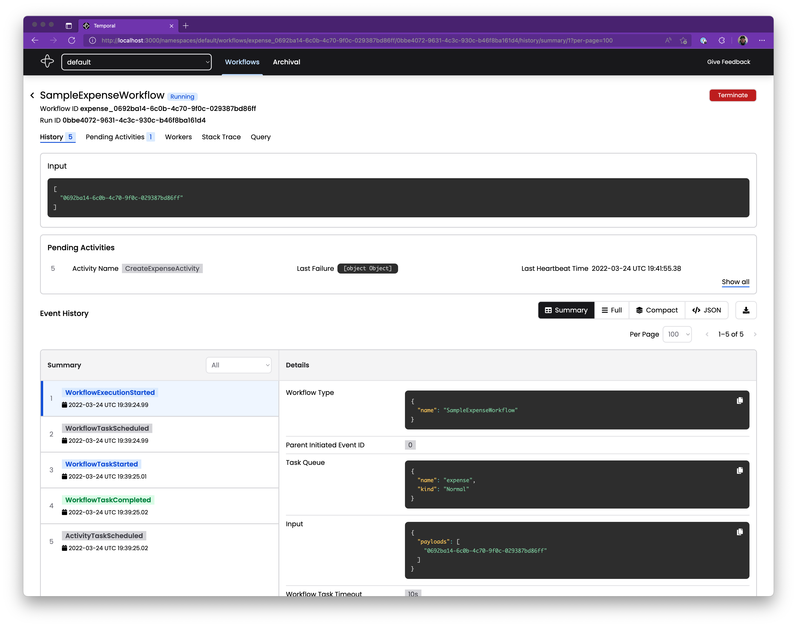

Love | Hate
Workflows
----
### What this presentation is and isn't
Expectations management
++++
### What this presentation isn't
* tutorial
* deep dive
* scala heavy
++++
### What this presentation is
* problem introduction
* (shallow) solutions comparison
* battle report
++++
### Agenda?
* What is a workflow
* Why I am talking about this
* What are the main challenges
* How different solutions help with them
* Why everything is broken
* Summary
----
## What is a workflow?
++++
What is a workflow?
### Let's start with synonyms
* long-running process
* workflow
* persistent state machine
* business process
* service orchestration
* process orchestration
++++
What is a workflow?
### Short Definition
> Series of steps with internal state that has to survive a system restart
Intuitive and imprecise
++++
What is a workflow?
### Longer definition
It's a process that
* spans from few seconds to few weeks
* involves waiting, e.g. for human action or async response
* has internal state passed between steps
Still not perfect but 🤷
++++
What is a workflow?
### Examples
++++
What is a workflow: Examples
### Shopping cart
* Select product
* Accept payment
* Prepare
* Ship
++++
What is a workflow: Examples
### Money payout
* Initiate
* Put funds on hold
* Check
* Review by human
* Release
++++
What is a workflow: Examples
### Install software
* Connect to remote machine
* Trigger installation
* Provision license
* Check
* Notify IT support if something went wrong
* Wait for confirmation
----
## Why am I talking about this?
++++
### 4+ years
### 2 companies
### 3 products
### dozens of processes
++++
#### Beginning
### Security automation at

++++
#### Next step
### Lean process automation
\+ Self-service
Spoiler: not the greatest idea
++++
### Now
#### Transactions processing at
 ----
## Biggest "Challenges"
#### of working with workflows
++++
### Biggest Challenges
* Versioning
* Overview
* Introspection
* Recovery
++++
----
## Biggest "Challenges"
#### of working with workflows
++++
### Biggest Challenges
* Versioning
* Overview
* Introspection
* Recovery
++++
Biggest challenges
### Versioning
What happens to the processes in progress when process definition changes?
++++
Biggest challenges
### Overview
How the process looks like?
> Every sufficiently complicated workflow is not understandable without graphical representation
++++
Biggest challenges
### Introspection
What is the state of the process? Why did it went given path?
++++
Biggest challenges
### Recovery
How to get back to the last state after system restart?
----
## Solutions
++++
##### Before we begin
++++
### Don't do it to yourself
++++
##### But if you really have to
++++
#### Solutions
### Camunda vs Temporal
### vs Raw Event sourcing
++++
Solutions
#### What to expect?
* How X works
* Why it doesn't
* How it tries to solve main challenges
----
Solution 1
## Camunda
++++
Camunda: how it works
##### Step 0
### Choose between versions
### 7 & 8
They recently switched the distribution model
++++
Camunda: how it works
##### Step 1
### Define the workflow
As XML, through:
* Graphical Editor
* Java API
* Write by hand?
++++

++++
```java
Bpmn.createProcess()
.startEvent()
.userTask()
.exclusiveGateway()
.condition("approved", "${approved}")
.serviceTask()
.endEvent()
.moveToLastGateway()
.condition("not approved", "${!approved}")
.scriptTask()
.endEvent()
.done();
```
++++
Camunda: how it works
##### Step 2
### Integrate with the backend
1. Your service polls the tasks
2. Does the work
3. Updates the workflow state
All through REST API
++++

++++
Camunda: how it works
##### Step 3
### Deploy to camunda server
XML has to be deployed to camunda instance
This server handles workflow state and lifecycle
++++

----
Camunda
### main challenges
++++
Camunda: main challenges
### Versioning
* Camunda keeps all workflow versions by default
* Old workflow instances stay on their version
* Can be migrated through dedicated api
++++
Camunda: main challenges
### Overview
* Camunda workflow XMLs are renderable
* Rendered version is the main way to look at them
* Camunda server comes with the GUI and shows the workflows
++++
Camunda: main challenges
### Introspection
* Camunda server allows you to browse all instances
* You can access all variables as well as all changes and state transitions
* You can even modify the workflow (🤡)
++++

++++
Camunda: main challenges
### Recovery
* Camunda server restores all state upon its restart
----
Camunda
### Problems
++++
Camunda: problems
#### Its easy to create an invalid workflow
So you have to create a linter
++++
Camunda: problems
#### Graphical editor will make your devs very angry
So you have to create a dsl
++++
Camunda: problems
#### Workflows are fragile
So you have to create a testing infrastructure
A lot is covered by camunda sdk, but not everything
++++
Camunda: problems
#### Workflows have global mutable & dynamiac state
So your DSL have to be crazy complicated
++++
#### I can go like that till tomorrow
++++
Camunda: problems
### Bottom line
##### Its great if you have enough load and resources
##### To pay for the tooling and complexity
----
Solution 2
## Temporal
++++
Temporal: how it works
##### Step 1
### You define your activities
Interface + implementation
++++
```java
@ActivityInterface
public interface GreetingActivities {
String composeGreeting(String greeting, String language);
}
```
```java
// Implementation for the GreetingActivities interface example from in the previous section
static class GreetingActivitiesImpl implements GreetingActivities {
@Override
public String composeGreeting(String greeting, String name) {
return greeting + " " + name + "!";
}
}
```
++++
Temporal: how it works
##### Step 2
### You define your workflow
Series of:
* in-process, deterministic computations
* calls to activities interface
\+ interface to invoke it
++++
```java
public class FileProcessingWorkflowImpl implements FileProcessingWorkflow {
private final FileProcessingActivities activities;
public FileProcessingWorkflowImpl() {
this.activities = Workflow.newActivityStub(
FileProcessingActivities.class,
ActivityOptions.newBuilder()
.setStartToCloseTimeout(Duration.ofHours(1))
.build());
}
@Override
public void processFile(Arguments args) {
String localName = null;
String processedName = null;
try {
localName = activities.download(args.getSourceBucketName(), args.getSourceFilename());
processedName = activities.processFile(localName);
activities.upload(args.getTargetBucketName(), args.getTargetFilename(), processedName);
} finally {
if (localName != null) {
activities.deleteLocalFile(localName);
}
if (processedName != null) {
activities.deleteLocalFile(processedName);
}
}
}
// ...
}
```
++++
Temporal: how it works
##### Step 3
### Run your servers
* activities server (worker)
* workflow server (worker)
* temporal server
----
Temporal
### main challenges
++++
Temporal: main challenges
### Versioning
* new version must behave exactly the same for old workflow instances
* you need to put version-based conditionals to alter the behaviour
* you can remove old code when you don't have any running workflow instances
++++
```java
int version = Workflow.getVersion("checksumAdded", Workflow.DEFAULT_VERSION, 1);
if (version == Workflow.DEFAULT_VERSION) {
activities.upload(args.getTargetBucketName(), args.getTargetFilename(), processedName);
} else {
long checksum = activities.calculateChecksum(processedName);
activities.uploadWithChecksum(
args.getTargetBucketName(), args.getTargetFilename(), processedName, checksum);
}
```
++++
Temporal: main challenges
### Overview
Nope
Only through code
Unless you build a DSL on top
++++
Temporal: main challenges
### Introspection
Temporal provides UI showing all events registered during instance execution
++++

++++
Temporal: main challenges
### Recovery
* event-sourced in nature
* workflow code runs as usual
* during recovery all already executed activities are replaced with previous output
----
Temporal
### Problems
++++
Temporal: problems
#### Java SDK is Java-ish (🪄🪄🪄)
And it's hard to cover with abstraction layer
++++
Temporal: problems
#### No migrations
++++
Temporal: problems
#### No overview
++++
Temporal: problems
### Bottom line
##### It's much better for creating workflows
##### It's much worse for maintenance and operations
----
Solution 3
## Custom Event Sourcing
++++
Custom Event Sourcing: How
##### Step 1
### Take an event-sourcing library
* akka (under expensive license right now)
* aecor (dead?)
* endless4s (fresh, only akka runtime at the moment)
* build your own (hard-ish and expensive)
++++
Custom Event Sourcing: How
##### Step 2
### Express workflow as set of commands and events
* external world sends commands
* commands execute side effects and produce events
* events modify the state and can produce more commands
* events are persisted
----
Custom Event Sourcing
### main challenges
++++
Custom Event Sourcing: main challenges
### Versioning
* old events have to work, or you migrate the journal
* similar to Temporal but with more freedom
++++
Custom Event Sourcing: main challenges
### Overview
Nope, unless you build some
++++
Custom Event Sourcing: main challenges
### Introspection
Nope, unless you build some
++++
Custom Event Sourcing: main challenges
### Recovery
* state is rebuilt from events
* processing continues from last recorded event
----
## Is there another way?
Maybe
++++
#### Try to make it as simple as possible
Just put your state in the database
Make all operations idempotent
----
## Summary
* Camunda requires a lot of tooling around, mostly due its dynamicity
* Temporal is closer to devs but at the cost
* Raw event sourcing is the most flexible but requires the most work to reach feature parity
* Both Temporal and Camunda developed A LOT in last years